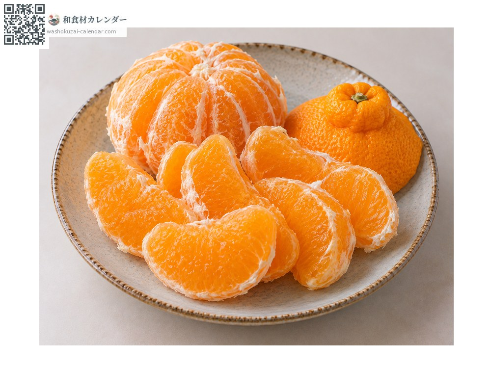
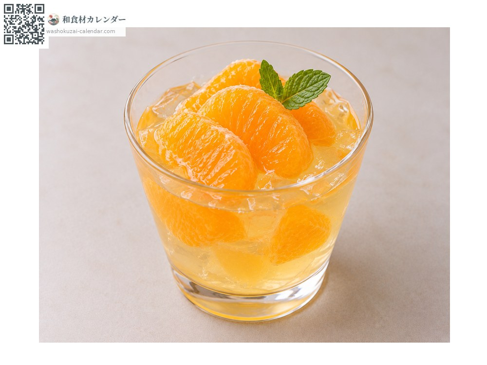
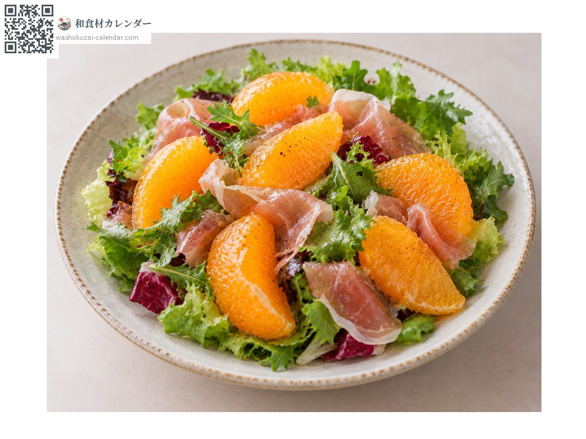

ผลไม้
ส้มเดโกะปง
デコポン でこぽん dekopon
ชื่ออื่นdekopon, shiranui
อร่อยที่สุดในเดือน มี.ค., เม.ย.

ช่วงที่อร่อยที่สุด
ม.ค.
ก.พ.
มี.ค.
เม.ย.
พ.ค.
มิ.ย.
ก.ค.
ส.ค.
ก.ย.
ต.ค.
พ.ย.
ธ.ค.
ช่วงอร่อยที่สุดมีจำหน่าย
วิธีปรุง

ทานสด
ปอกเปลือกด้วยมือได้ กินได้ทั้งเยื่อหุ้มกลีบ

เยลลี่
ทำน้ำคั้นให้เซ็ตตัว กลิ่นหอมสดชื่น

สลัด
จัดคู่กับแฮมรมควันหรือผักใบ
วิธีเลือก
สีเข้มและยกแล้วรู้สึกหนัก ขนาดของปุ่มบนหัวไม่เกี่ยวกับรสชาติ
วิธีเก็บรักษา
เก็บในที่อากาศถ่ายเทที่อุณหภูมิห้อง ใส่ถุงจะช่วยกันแห้ง
แหล่งผลิตหลัก
เกร็ดน่ารู้
ชื่อพันธุ์คือชิรานุอิ เฉพาะผลที่ผ่านเกณฑ์ความหวาน 13 องศาขึ้นไปและกรดซิตริก 1.0 ลงมาเท่านั้นจึงใช้ชื่อเดโกะปงซึ่งเป็นเครื่องหมายการค้าจดทะเบียนได้ ที่เหลือขายในชื่อชิรานุอิ ปุ่มนูนบนหัวคือเอกลักษณ์